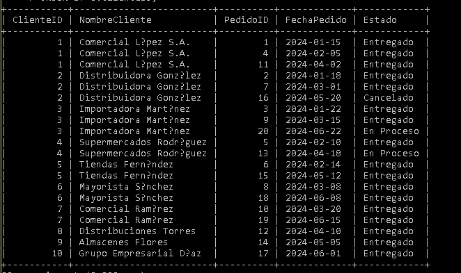

Código SQL
SELECT
c.ClienteID,
c.NombreCliente,
p.PedidoID,
p.FechaPedido,
p.Estado
FROM Clientes c
LEFT JOIN Pedidos p
ON c.ClienteID = p.ClienteID
ORDER BY c.NombreCliente, p.FechaPedido;
Resultado de la Consulta
En esta sección se muestra la captura del resultado obtenido al ejecutar la consulta en MySQL, donde se visualizan todos los clientes, incluyendo aquellos que no han realizado pedidos.
